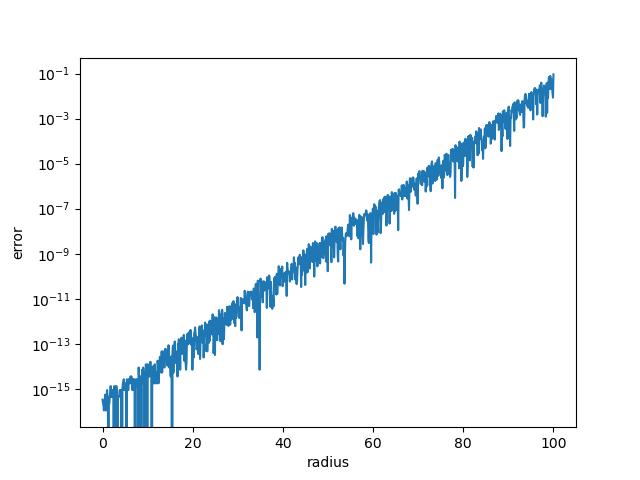
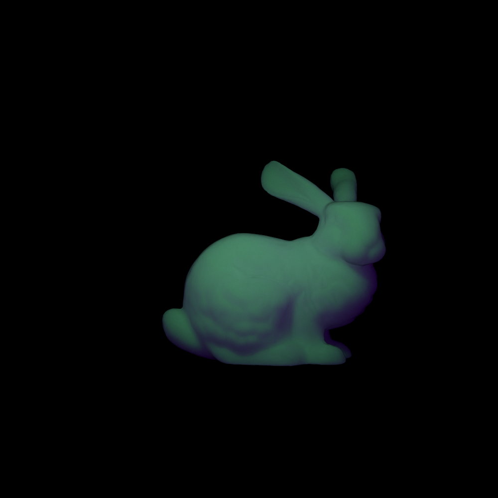

Subsurface Scattering(Part Two)
More about Normalized BSSRDF
Let's take another look at Normalized BSSRDF now: \[ R_d(r)=A\frac{e^{-r/d}+e^{-r/3d}}{8\pi dr} \] We mentioned in the previous post that the parts except for the \(A\) vanishes after integrating over the surface, which means that it can be treated as a PDF. \[ pdf(r,\theta)=\frac{e^{-r/d}+e^{-r/3d}}{8\pi dr} \] Due to symmetry, we can drop the \(\theta\) for now: \[ pdf(r)=\frac{e^{-r/d}+e^{-r/3d}}{4dr} \]
The corresponding CDF representing the probability of the sampled point falling into a circle of radius \(r\) is: \[ cdf(r)=1-\frac14e^{-r/d}-\frac34e^{-r/3d} \] In order to sample from the PDF/CDF, we need to calculate the \(r\) which makes the CDF give a certain value, say \(\zeta\). According to Per H. Christensen et al., there is no analytical form of the function above, but after a little experiment, I found it otherwise.
For the following equation: \[ \zeta=1-\frac14e^{-r/d}-\frac34e^{-r/3d} \]
We have: \[ e^{-r/d}+3e^{-r/3d}-4(1-\zeta)=0 \] Notice the \(e^{-r/d}\) is the cube of \(e^{-r/3d}\), we can replace them as \(x^3\) and \(x\): \[ x^3+3x-4(1-\zeta)=0 \] This is just a cubic equation, which is definitely analytically solvable. We take the real root here and get the expression of \(r\) as \(r=-3d\log(x)\).
The full expression of \(r\) is too complicated so I would not show it here, but I will give you the python code implementation of the function:
1 | def sample_radius(u, d): |
Let's test if it actually works. We define the CDF in python code as below:
1 | def cdf_radius(r, d): |
Theoretically, the sample_radius, or
inv_cdf_radius, should satisfy that
r == sample_radius(cdf_radius(r, d), d).
Let's define the error as
lambda r: abs(r-sample_radius(cdf_radius(r, d), d)) and set
d to 1.0 for convenience. The figure of the error is as
follows:

Importance Sampling Using Normalized BSSRDF
When evaluating the radiance \(L_o(x_o,\vec\omega_o)\): \[ L_o(x_o,\vec\omega_o)=\int_A\int_{2\pi}S(x_i,\vec\omega_i;x_o,\vec\omega_o)L_i(x_i,\vec\omega_i)|\cos\theta_i|d\vec\omega_idA \] using Monte Carlo method, we change it into \[ L_o(x_o,\vec\omega_o)\approx\frac{1}{N}\sum_{k=1}^N\frac{F_t(\eta,\vec\omega_o)R_d(x_{ik},x_o)}{\pi \cdot pdf(x_{ik})}\int_{2\pi}L_i(x_{ik},\vec\omega_{i})F_t(\eta,\vec\omega_{i})|\cos\theta_{i}|d\vec\omega_{i} \] Say, more specifically, we are doing this using path tracing and we only want one sample of \(x_i\), that is \(N=1\), then we have: \[ L_o(x_o,\vec\omega_o)\approx\frac{F_t(\eta,\vec\omega_o)R_d(x_{i},x_o)}{\pi \cdot pdf(x_{i})}\int_{2\pi}L_i(x_{i},\vec\omega_{i})F_t(\eta,\vec\omega_{i})|\cos\theta_{i}|d\vec\omega_{i} \] The irradiance integral term on the right can be evaluated the same way as in vanilla path tracing(cosine importance sampling or multiple importance sampling and so on). And for the left part, we need to do an importance sampling of \(x_i\) according to the diffusion profile, which happens to be a suitable candidate PDF itself.
So suppose \(pdf(x_i)=R_d(x_i,x_o)\) and the object has a very flat surface, as is in the original MC simulation from which the BSSRDF formula derived, we need to sample \(r\) and \(\theta\). Fortunately, using the conclusion from the previous section, we can sample \(r\) directly by feeding a uniformly distributed pseudo random number to the inverse CDF. As for \(\theta\), it can be sampled uniformly from \([0,2\pi]\) due to symmetry of the diffusion profile. Notice that we have different diffuse mean free path(the \(d\) in the BSSRDF formula) for each channel of the RGB color, so we need to sample the channel of diffuse mean free path as well. For now, this is enough for sampling over a half-infinite plane.
However, the model here is far from being flat: the sampled points, in most cases, do not lie in the surface of our model(say, the bunny in the previous post). In this case we need to project the point onto the surface using a probe ray. You can check out this article written by a senpai(I don't know the suitable word in English) in my lab. Using the method described in the article, we need to sample the axis for our projection and a bounding radius \(R_{max}\) as well. However there are still a few problems not mentioned in the article:
- You may need to rotate the tangent space axes to if you are using the closest hit of the probe ray, otherwise some corners of the object can never be sampled and there would be some serious artifacts.
- In order to sample \(r\) within \([0,R_{max}]\), we can use \(u_1\) to sample \(R_{max}\) and use \(u_1\cdot u_2\) to sample \(r\), where both \(u_1\) and \(u_2\) are uniformly distributed pseudo random numbers. The problem is that \(u_1\cdot u_2\) as a random variable is not uniformly distributed, so you may need to consider its own PDF(which is \(pdf(x)=-log(x)\), if my calculations are correct).
Considering each combination of channel and axis as different sampling strategies, we have the overall PDF of \(x_i\) as \[ pdf(x_i)=\sum_{c\in\{r,g,b\}}\sum_{\vec z\in\{\vec n,\vec t,\vec b\}}\frac{1}{|\vec z\cdot\vec n_i|} R_d(||(\vec x_i-\vec x_o)\times\vec z||)\cdot pdf_{axis}(\vec z)\cdot pdf_{channel}(c) \]
Path Tracing Normalized BSSRDF
The routine of path tracing a scene with BSSRDF is almost the same as vanilla path tracing, except that we sample an exit point on the surface every time we hit an object using Normalized BSSRDF.
You can check out my code here.
I did not include the specular part here, but the result does resemble the bunny in the previous post, albeit some difference in brightness. In order to align brightness with the method in the previous post I added a \(\pi\) in the BSSRDF formula and the result looks like this:

The skin material on the bunny when path traced looks like:
Recommended Materials
- The article on BSSRDF importance sampling.
If you like this post, be aware that there will be a "Part Three", where we dig into the screen-space methods, though I doubt that it would come out very soon.
Thank you for reading this blog and have a great day anyway!